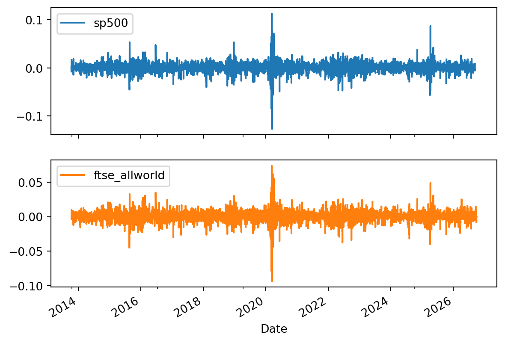
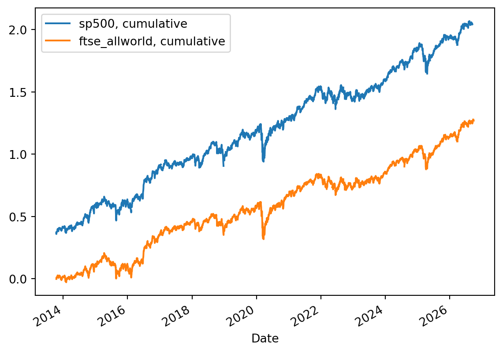
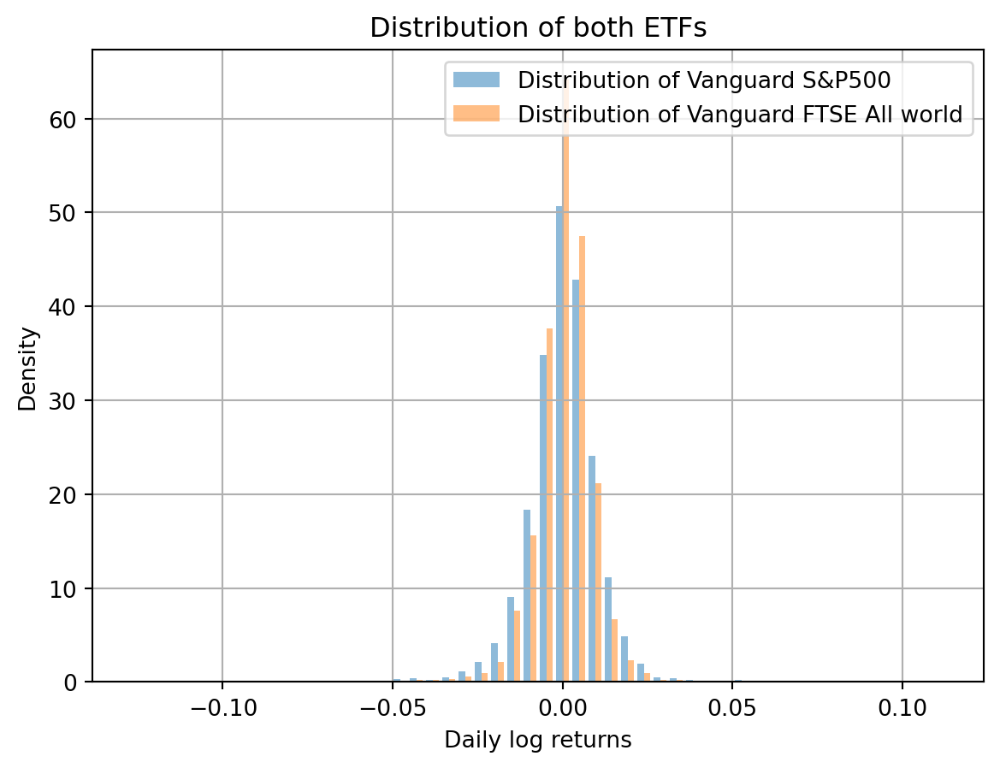
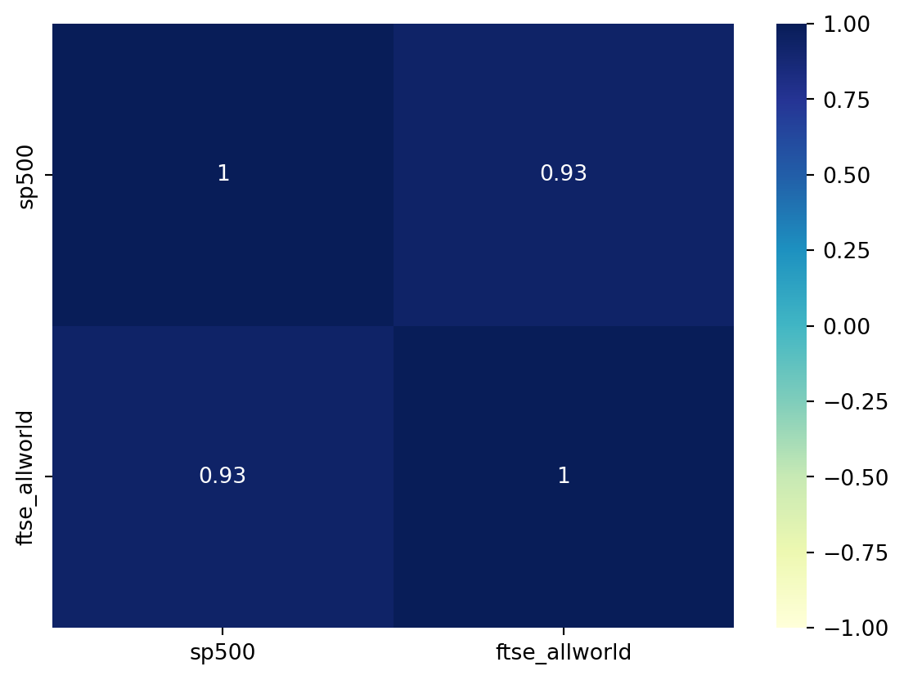
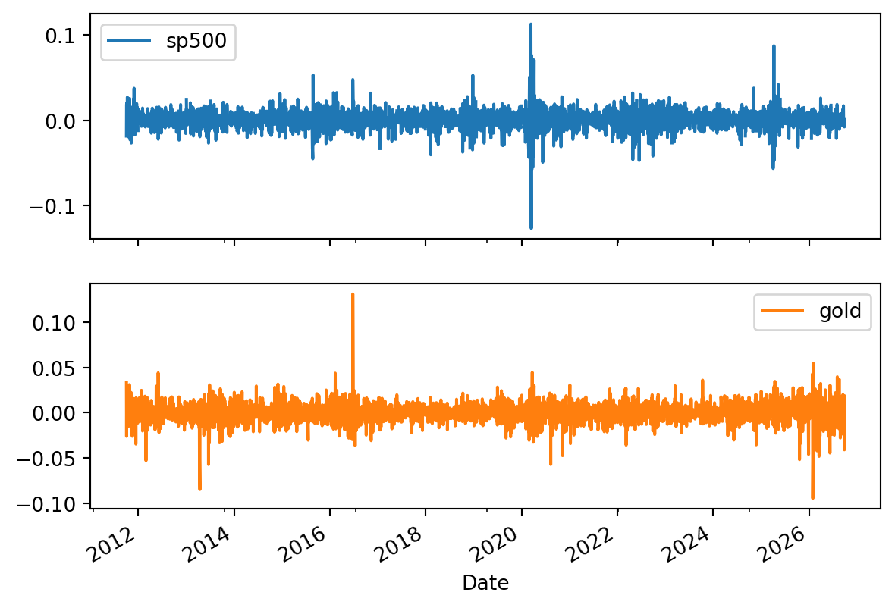
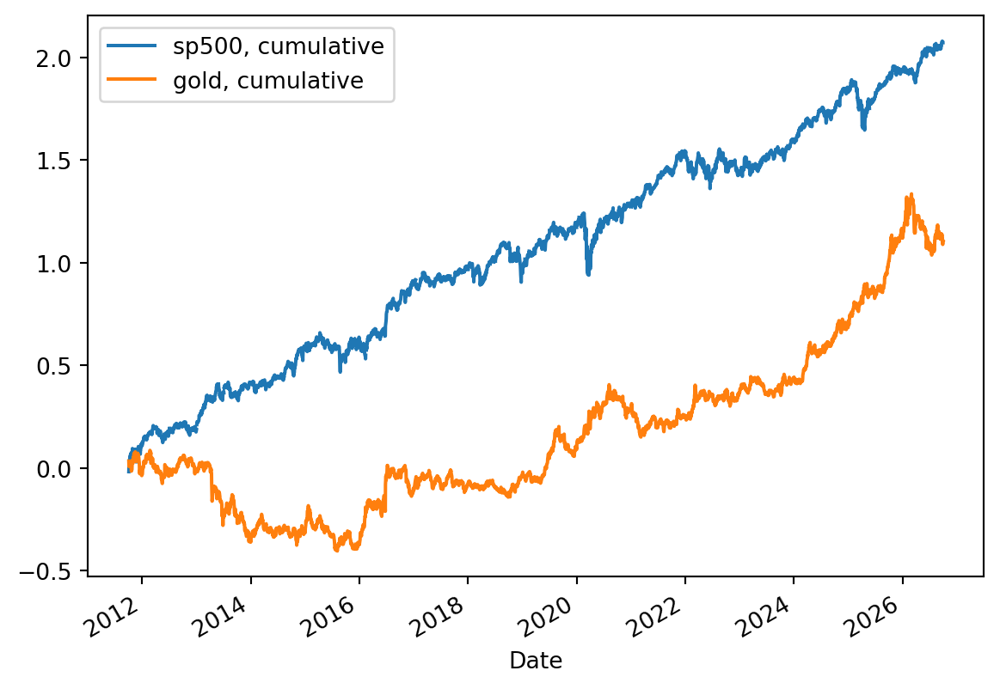
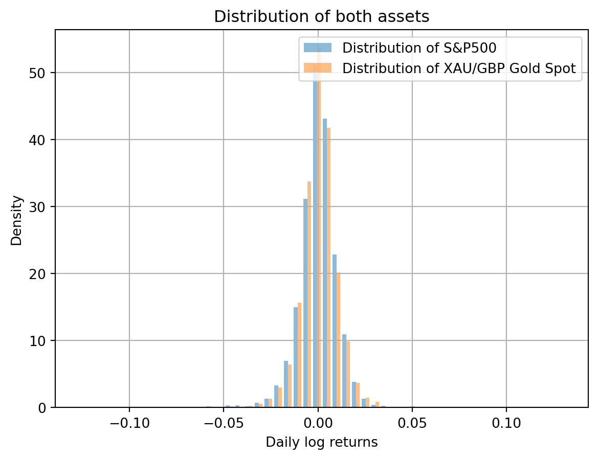
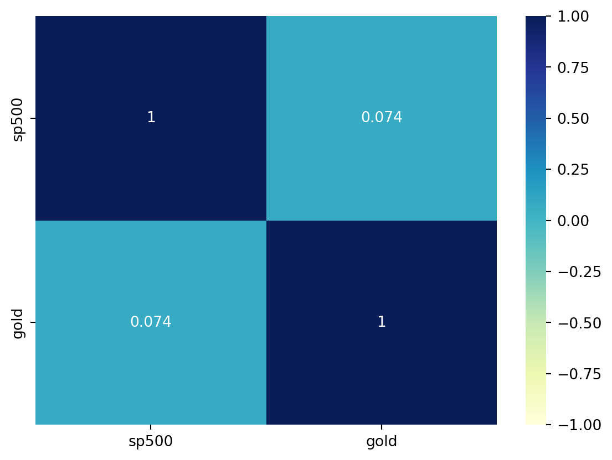
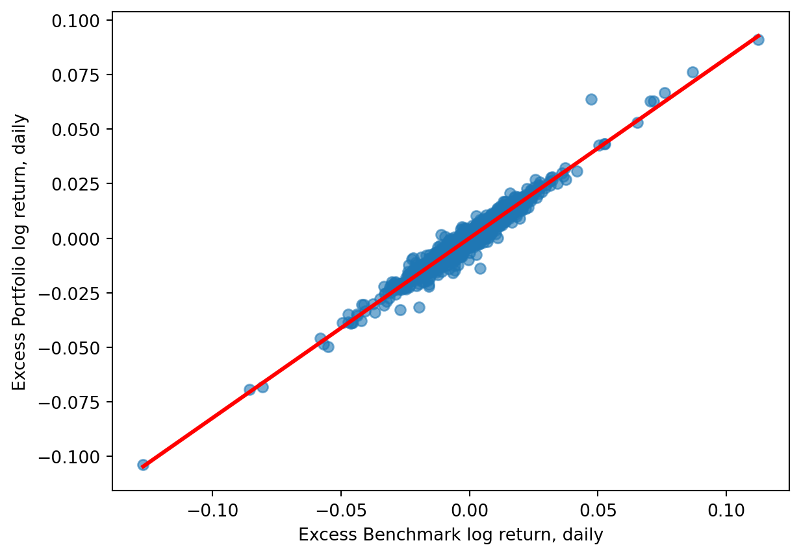
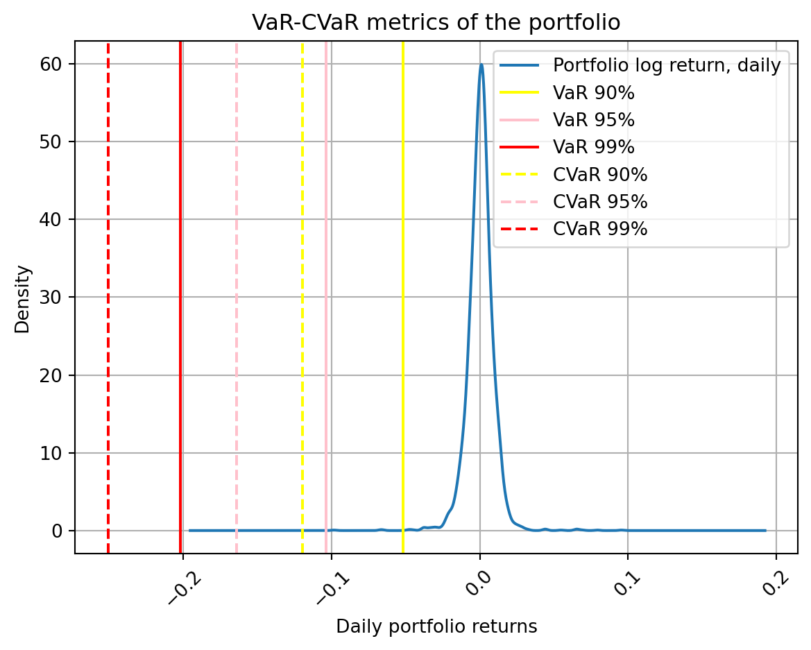

GBPUSD = pd.read_csv('Client/Proxies/GBP_USD Historical Data.csv', parse_dates = ['Date'], index_col = 'Date', thousands = ',', na_values = 'n/a').sort_index(ascending = True) # import of GBP/USD indirect quote
sp500 = pd.read_csv('Client/Proxies/S&P 500 Historical Data.csv', parse_dates = ['Date'], index_col = 'Date', thousands = ',', na_values = 'n/a').sort_index(ascending = True) # import of S&P500 proxy
ftse_allworld = pd.read_csv('Client/Proxies/FTSE All World Historical Data.csv', parse_dates = ['Date'], index_col = 'Date', na_values = 'n/a').sort_index(ascending = True) # import of FTSE All world proxyPortfolio Optimisation Project
1 Introduction
This is a project on Portfolio Optimisation. It was created to practice freshly acquired skills in Python that I had been learning in Summer 2026. The main goal was to consolidate my knowledge of Python through a basic financial engineering application. While the topic is one of the classiest assignments in quantitative finance, I aimed to push the scope by integrating as many technical skills and analytical techniques as I could.
The portfolio analysed in this work was provided to me by a personal contact. Taking this opportunity, I’d like to express my big gratitude to this person. Bellow, I will first introduce the portfolio and then present my work step by step shortly explaining what I did in every part of my code.
2 Portfolio analysis
2.1 Portfolio details
The portfolio I was given had been in possession of the owner for around the last six months. The owner was keen on investing into largely diversified ETFs that track some of the most famous market indices. In particular, she had 2 assets in her portfolio, namely Vanguard’s ETFs for S&P500 and FTSE All-world indices. The weightings were 13,54% for S&P500 and 86,46% for FTSE All-world. The main concern that has come up on my end after the first quick analysis involves the risk statistics of both assets, mostly regarding correlation of both assets. Due to this issue, I suggested conducting a portfolio analysis with further diversification goal.
It is important to note, that both acquired ETFs have been traded on the market approximately for the last 7 years. This means for us that we require some appropriate proxies for both assets, as the present time series are not long enough for a sufficient analysis. Since our investments track well-known indices, we have no problem to download 15 years of data to conduct a robust research for our purposes. Later, we’ll merely have to appreciate for some additional costs for services, when adjusting our final results. In order to verify reliability of this approach, you can check on past performance in ETFs’ documentation.
There is another important detail regarding such proxies. All of them are initially presented in dollars. Since portfolio owner is a UK resident, we have to appreciate for GBP/USD rate, as all presented assets in the analysis have no hedge against FX risk. Here is to note, that the FX rate dataset used for this purpose has GBP/USD indirect quote, i.e., price for one GBP in dollars.
2.2 Initial data manipulations
For a start, let’s import the data:
I have shaped the data into appropriate time series for the further analysis, e.g., I’ve set the Date column as an index, sorted the whole table by it and addressed the missing values in the data frame.
Next, we’d like to create the return columns. Since we’ll perform modelling for required inference, it’d be better to make use of continuous returns, i.e., log transform the simple returns column once it’s computed. Additinally, we estimate also a cumulative log returns column for the plotting purposes.
GBPUSD['Return, daily'] = GBPUSD['Price'].pct_change(periods = 1)
sp500['Return, daily'] = (sp500['Price'].pct_change(periods = 1).add(1)).div(GBPUSD['Return, daily'].add(1)).sub(1) # simple returns
sp500['Log return, daily'] = np.log(sp500['Return, daily'].add(1)) # log returns
sp500['Cumulative log return, daily'] = np.cumsum(sp500['Log return, daily']) # cumulative log returns
ftse_allworld['Return, daily'] = (ftse_allworld['Price'].pct_change(periods = 1).add(1)).div(GBPUSD['Return, daily'].add(1)).sub(1) # simple returns
ftse_allworld['Log return, daily'] = np.log(ftse_allworld['Return, daily'].add(1)) # log returns
ftse_allworld['Cumulative log return, daily'] = np.cumsum(ftse_allworld['Log return, daily']) # cumulative log returnsAt this point it was noticed that FTSE All world index starts a bit later than 15 years ago. We assume it doesn’t corrupt analysis and allign length of both time series
sp500 = sp500.loc['10/14/2013':'09/15/2026'] # cutting the data2.3 Returns plots and statistics
Now, as we have successfully maintained the data, we are good to construct some plots and observe statistic tables for the assets analysis.
LogReturnsData = pd.DataFrame({'sp500' : sp500['Log return, daily'],
'sp500, cumulative' : sp500['Cumulative log return, daily'],
'ftse_allworld' : ftse_allworld['Log return, daily'],
'ftse_allworld, cumulative' : ftse_allworld['Cumulative log return, daily']}) # Assignment of the log returns dataframe for further modelling manipulationsWe are going to plot returns by 2 graphs, one for log returns themselves and one for the cumulative representiation.
LogReturnsData[['sp500', 'ftse_allworld']].plot(subplots = True) # plot of simple log returns
plt.show()
LogReturnsData[['sp500, cumulative', 'ftse_allworld, cumulative']].plot(kind = 'line') # plot of cumulative log returns
plt.show()

As we may read it from the plots above, the correlation between both ETFs is drammaticaly strong. Such investment allocation may be as successful as investment in only one of both assets. Obviously, we are going to see similar picture on the following statistic tables.
In order to obtain all necessary values for sufficient analysis, we’ll assign first table by means of the .describe() method and second using .agg() . Additionally, we’ll annualise mean return and standard deviation.
statistics1 = LogReturnsData[['sp500', 'ftse_allworld']].describe() # descriptive statistics
print(statistics1)
statistics2 = LogReturnsData[['sp500', 'ftse_allworld']].agg(['median', 'var', 'skew', 'kurtosis']) # descriptive statistics
print(statistics2)
annual_mean = np.exp(statistics1.loc['mean'].mul(252)).sub(1) # reverse the log transformation and annualise return
print('annual mean values are:\n', annual_mean)
annual_std = statistics1.loc['std'].mul(np.sqrt(252)) # annualise standard deviation value
print('annual standard deviation values are:\n', annual_std) sp500 ftse_allworld
count 3249.000000 3378.000000
mean 0.000517 0.000375
std 0.010977 0.008516
min -0.126842 -0.093779
25% -0.004600 -0.003628
50% 0.000884 0.000612
75% 0.006153 0.004814
max 0.112564 0.073736
sp500 ftse_allworld
median 0.000884 0.000612
var 0.000121 0.000073
skew -0.308484 -0.723854
kurtosis 15.768773 14.134924
annual mean values are:
sp500 0.139041
ftse_allworld 0.099238
Name: mean, dtype: float64
annual standard deviation values are:
sp500 0.174259
ftse_allworld 0.135194
Name: std, dtype: float64Portfolio owner asked me to optimise it, such that a better of two assets stays on the books. At this point, we need to choose one of the assets based on descriptive statistics, in order to substitute a worse investment with an alternative.
2.3.1 Findings
Fisrt finding that we can see is negative skewness of both indices. These values basically say that while retruns are mostly placed around mean and are positive, considerable share of outliers in the data is negative, i.e., ususally market shocks lead to some big falls in value, not to its rises. Preferably, we want to have assets with positive skewness, but in these terms, S&P500 is what we may keep working with later.
Furthermore, kurtosis value of each ETF appears to be very large. Ideally, we’d have a value arround 3, but the present distributions’ kurtosis says it is pretty much leptokurtic, which means tails are longer and thicker, and central peak is higher and sharper. In fact, this is more than possible, considering the issuer of both tracking ETFs states level of risk 6 out of 7 in the documentation. Later, you’ll be able to observe this issue on the distribution plot.
Taken together, the picture we observe in both tables allows us to state the following: the kurtosis coefficients correspond to what one can observe in the minimum and maximum values of both series. The outliers of S&P500 extend further from the mean, than those of FTSE All-world. It also relates to what we can read from lower and upper quartile of distributions. Perhaps, more negative skewness of FTSE All-world indicates a higher share of losses among the outliers, whereas the skewness of S&P500 does not raise such concerns and appears more promising in light of the above facts.
Last but not least, what one can make some conclusions from is mean and standard deviation of both assets. Comparing both ETFs, we notice that S&P500 has relatively high volatility of 17%, even if the mean return is greater than that of FTSE all-world.
Now, we can summarise the observation by distribution plot
plt.hist(x = LogReturnsData[['sp500', 'ftse_allworld']],
bins = 50,
density = True,
alpha = 0.5,
label = ['Distribution of Vanguard S&P500', 'Distribution of Vanguard FTSE All world']) # histogram of distribution for both assets
plt.xlabel('Daily log returns')
plt.ylabel('Density')
plt.title('Distribution of both ETFs')
plt.grid(True)
plt.legend()
plt.show()
Taking into account all findings and the latter plot, we can come to conclusion that it’d be a rather better idea to exclude FTSE all world, if we have to keep one of investments, as the owner requested.
2.4 Correlation
As I spoiled it at the very beginning (and as one might have seen on the cumulative returns graph), correlation issue in the portfolio is drammatic and must be addressed as part of optimisation.
The following heatmap visualises the correlations.
correlation = LogReturnsData[['sp500', 'ftse_allworld']].corr() # privides with correlation value
sbn.heatmap(correlation,
annot = True,
cmap = 'YlGnBu',
vmin = -1, vmax = 1) # heatmap for correlation visualisation
plt.show()
So, as we may conclude, the diagnosis in our case is obvious: both investments essentially follow each other’s movement, which certainly must be fixed.
2.5 Portfolio performance
For comparison purposes, let’s now check portfolio performance given the initial assets and weights.
As the owner is located in the UK, we are going to use risk-free interest rate offered by Bank of England as of this project’s publishment date. At this moment, BoE’s rate is 3.75% p.a.
According to portfolio holder, 86.46% of capital is allocated in the FTSE all world ETF and 13.54% in S&P500 ETF.
Mind that our investor is not risk averse, from what we conclude it’d be more optimal to consider tangency portfolio later, rather than global minimum volatility option.
risk_free = 0.0375 # assignment of risk-free rate
PriceData = pd.DataFrame({'sp500' : sp500['Price'].div(GBPUSD['Price']),
'ftse_allworld' : ftse_allworld['Price'].div(GBPUSD['Price'])}) # Price dataframe
mu = expected_returns.mean_historical_return(PriceData) # computation of assets' annual mean
Sigma = risk_models.sample_cov(PriceData) # computation of annual assets' volatility
EF_undiv = EfficientFrontier(mu, Sigma) # Efficient frontier
EF_undiv.set_weights({'sp500' : 0.1354,
'ftse_allworld' : 0.8646}) # manual weights assignment
EF_undiv.portfolio_performance(verbose = True, risk_free_rate = risk_free) # annual mean and volatility of portfolio
cleaned_weights = EF_undiv.clean_weights()
print(cleaned_weights) # output of pre-assigned weights to present full information.Expected annual return: 10.6%
Annual volatility: 14.0%
Sharpe Ratio: 0.49
OrderedDict([('sp500', 0.1354), ('ftse_allworld', 0.8646)])/Users/olegburdukov/Library/Python/3.9/lib/python/site-packages/pypfopt/expected_returns.py:32: UserWarning: Some returns are NaN. Please check your price data.
warnings.warn(In the code output we can observe quite low annual return of portfolio, especially if we look at volatility measure. 14% of volatility for 10.6% of return is unnecessary risk, to put it mildly. Another value which would easily raise concerns is the sharpe ratio of 0.49. It is definitelly low and the new asset should address this inefficiency, too.
3 Optimised portfolio analysis
We now observe the substitute asset, which is gold ETC. This exchange traded commodity was issued by Wisdom Tree and in order to efficiently observe it, we’ll take the Gold USD spot for the period of 15 last years as a proxy and appreciate for FX rate.
The procedure with the data maintenance is more or less the same as before.
sp500 = pd.read_csv('Client/Proxies/S&P 500 Historical Data.csv', parse_dates = ['Date'], index_col = 'Date', thousands = ',', na_values = 'n/a').sort_index(ascending = True) # reimport of this dataset due to it being cut during previous analysis part
gold = pd.read_csv('Client/Proxies/XAU_USD Historical Data.csv', parse_dates = ['Date'], index_col = 'Date', thousands = ',', na_values = 'n/a').sort_index(ascending = True) # data for gold ETC proxy
sp500['Return, daily'] = (sp500['Price'].pct_change(periods = 1).add(1)).div(GBPUSD['Return, daily'].add(1)).sub(1) # simple returns
sp500['Log return, daily'] = np.log(sp500['Return, daily'].add(1)) # log returns
sp500['Cumulative log return, daily'] = np.cumsum(sp500['Log return, daily']) # cumulative log returns
gold['Return, daily'] = (gold['Price'].pct_change(periods = 1).add(1)).div(GBPUSD['Return, daily'].add(1)).sub(1) # simple returns
gold['Log return, daily'] = np.log(gold['Return, daily'].add(1)) # log returns
gold['Cumulative log return, daily'] = np.cumsum(gold['Log return, daily']) # cumulative log returns3.1 Returns plots and statistics
As before, we first plot returns and analyse descriptive statistics
LogReturnsData = pd.DataFrame({'sp500' : sp500['Log return, daily'],
'sp500, cumulative' : sp500['Cumulative log return, daily'],
'gold' : gold['Log return, daily'],
'gold, cumulative' : gold['Cumulative log return, daily']}) # Assignment of the log returns dataframe for further modelling manipulations
LogReturnsData[['sp500', 'gold']].plot(subplots = True) # simple log returns
plt.show()
LogReturnsData[['sp500, cumulative', 'gold, cumulative']].plot(kind = 'line') # cumulative log returns
plt.show()
statistics1 = LogReturnsData[['sp500', 'gold']].describe() # descriptive statistics
print(statistics1)
statistics2 = LogReturnsData[['sp500', 'gold']].agg(['median', 'var', 'skew', 'kurtosis']) # descriptive statistics
print(statistics2)
annual_mean = np.exp(statistics1.loc['mean'].mul(252)).sub(1) # reverse the log transformation and annualise return
print('annualised mean return values are:\n', annual_mean)
annual_std = statistics1.loc['std'].mul(np.sqrt(252)) # annualise standard deviation value
print('annualised standard deviation values of returns are:\n', annual_std)

sp500 gold
count 3769.000000 3903.000000
mean 0.000550 0.000284
std 0.010689 0.010093
min -0.126842 -0.094842
25% -0.004540 -0.004778
50% 0.000775 0.000278
75% 0.006073 0.005530
max 0.112564 0.131023
sp500 gold
median 0.000775 0.000278
var 0.000114 0.000102
skew -0.286494 -0.045204
kurtosis 15.233218 12.906596
annualised mean return values are:
sp500 0.148584
gold 0.074073
Name: mean, dtype: float64
annualised standard deviation values of returns are:
sp500 0.169690
gold 0.160227
Name: std, dtype: float643.2 Findings
Now, the output is much more promising. Of course we first see it on the graphs. Returns do not appear to share the same path across the whole time series any longer . Regarding the descriptive statistics, they also suggest a better picture, although not perfect. For example, despite the skewness of gold is still negative, its value is now close to 0, which is good. It essentially indicates that outliers are almost equally distributed in the both tails, which means better chances for the positive shocks. The value for kurtosis has also been reduced. It might be still far from what we wish to see, i.e., around 3, but 12.9 is what we at least can work with more securely.
What might raise some concens about gold, is lower return for a slightly higher standard deviation, comparing to all-world index. Perhaps, it is still not a big problem, considering other metrics with better values and the ultimate results in the end.
Summarising, we can again have a look at the new distribution plot.
plt.hist(x = LogReturnsData[['sp500', 'gold']],
bins = 50,
density = True,
alpha = 0.5,
label = ['Distribution of S&P500', 'Distribution of XAU/GBP Gold Spot'])
plt.xlabel('Daily log returns')
plt.ylabel('Density')
plt.title('Distribution of both assets')
plt.grid(True)
plt.legend()
plt.show()
3.3 Correlation
correlation = LogReturnsData[['sp500', 'gold']].corr()
sbn.heatmap(correlation,
annot = True,
cmap = 'YlGnBu',
vmin = -1, vmax = 1)
plt.show()
As cumulative returns graph allowed to suspect, correlation between these assets is just what we were looking for.
After the analysis, we can confidently say that the asset, albeit flawed, can deliver on our goal during the new portfolio construction.
3.4 Portfolio construction
PriceData = pd.DataFrame({'sp500' : sp500['Price'].div(GBPUSD['Price']),
'gold' : gold['Price'].div(GBPUSD['Price'])})
mu = expected_returns.mean_historical_return(PriceData)
Sigma = risk_models.sample_cov(PriceData)
EF_div = EfficientFrontier(mu, Sigma)
EF_div.max_sharpe(risk_free) # weights are no longer assigned manually, as we are looking for the best return-volatility combination, i.e., we should obtain the tangency portfolio
EF_div.portfolio_performance(verbose = True, risk_free_rate = risk_free)
cleaned_weights = EF_div.clean_weights()
print(cleaned_weights)Expected annual return: 13.2%
Annual volatility: 14.3%
Sharpe Ratio: 0.66
OrderedDict([('sp500', 0.81152), ('gold', 0.18848)])/Users/olegburdukov/Library/Python/3.9/lib/python/site-packages/pypfopt/expected_returns.py:32: UserWarning: Some returns are NaN. Please check your price data.
warnings.warn(From the output, we can draw 2 conclusions:
For a 0.3% increase of volatility we have reached 2.6% additional return with the alternative asset. Volatility 14.3% itself can be perceived as tolerable in our case, as the holder has a higher risk tolerance and is ready to take additional risk for a higher profit, if necessary.
An increased Sharpe Ratio serves as additional proof for a successfully optimised portfolio.
In other words, our portfolio optimisation has led to positive results in terms of risk-return ratio and the initial goal has been successfully achieved.
In the following analysis, we are going to study the risk metrics of the freshly shaped product to get a broader perspective on its quality and sustainability
4 Risk analytics
4.1 Market risk
Let’s consider one of the most classic market risk metrics, the CAPM’s beta factor. I decided to estimate it by means of linar regression in this work, although one can easily perform it in the other way.
Estimation assumes excessive return for both market and studied portfolio as an input. So, we have yet to appreciate both log returns time series for the daily risk-free rate. Mind that log returns are not to add or subtract between the assets, as its exponentialised result won’t be correct. From it follows that one has to exponentialise log retruns, subtract the daily risk-free, and then log transform the new series to proceed with modelling. Perhaps, we might say that the estimation error of log transformed difference of simple returns is low enough to difference of logarithmised returns and stick to the latter, easier approach.
LogReturnsData['Benchmark log return, daily'] = LogReturnsData['sp500']
LogReturnsData['Excess Benchmark log return, daily'] = LogReturnsData['Benchmark log return, daily'].sub(np.log(1 + risk_free)/252) # Excess log returns of the benchmark
LogReturnsData['Portfolio log return, daily'] = np.log(sp500['Return, daily'].mul(cleaned_weights['sp500']).add(gold['Return, daily'].mul(cleaned_weights['gold'])).add(1))
LogReturnsData['Excess Portfolio log return, daily'] = LogReturnsData['Portfolio log return, daily'].sub(np.log(1 + risk_free)/252) # Excess log returns of the portfolioAdditionally, mind that our benchmark is basically also a proxy for one of the portfolio assets. In this regard, there are 2 important points:
S&P500 ETF took place in both portfolios in this work
Before diversification, the whole portfolio had correlation of almost 1 between its assets. Because of it, the whole initial portfolio should have the beta value of ca. 1 to the same benchmark. Diversification would then prove beneficial in terms of beta factor, if beta fell bellow this level, i.e., its exposure to the market risk would be smaller.
model = smf.ols(formula = 'Q("Excess Portfolio log return, daily") ~ Q("Excess Benchmark log return, daily")', data = LogReturnsData) # model data assignment
fit = model.fit() # model construction
print(fit.summary()) # summary on the linear regression
pf_beta = fit.params['Q("Excess Benchmark log return, daily")'] # portfolio beta factor
print(pf_beta) OLS Regression Results
===================================================================================================
Dep. Variable: Q("Excess Portfolio log return, daily") R-squared: 0.955
Model: OLS Adj. R-squared: 0.955
Method: Least Squares F-statistic: 7.911e+04
Date: Sat, 03 Oct 2026 Prob (F-statistic): 0.00
Time: 14:30:39 Log-Likelihood: 18223.
No. Observations: 3769 AIC: -3.644e+04
Df Residuals: 3767 BIC: -3.643e+04
Df Model: 1
Covariance Type: nonrobust
===========================================================================================================
coef std err t P>|t| [0.025 0.975]
-----------------------------------------------------------------------------------------------------------
Intercept 3.263e-05 3.14e-05 1.041 0.298 -2.88e-05 9.41e-05
Q("Excess Benchmark log return, daily") 0.8245 0.003 281.257 0.000 0.819 0.830
==============================================================================
Omnibus: 744.355 Durbin-Watson: 2.007
Prob(Omnibus): 0.000 Jarque-Bera (JB): 23196.579
Skew: 0.077 Prob(JB): 0.00
Kurtosis: 15.153 Cond. No. 93.6
==============================================================================
Notes:
[1] Standard Errors assume that the covariance matrix of the errors is correctly specified.
0.8244832300213749Here, we can finish consideration of the market risk exposure by visualisation of the model
sbn.regplot(data = LogReturnsData,
x = 'Excess Benchmark log return, daily',
y = 'Excess Portfolio log return, daily',
line_kws = {'color' : 'red'},
scatter_kws = {'alpha' : 0.6})
plt.show()
4.1.1 Findings
The present linear regression model output has 2 most valuable numbers for us:
First, it is a decreased beta factor of 0.8245. This is a good result, considering the fact our benchmark is actually the proxy analysed on one of our assets stead. In other words, diversification strategy has proven beneficial, as our beta has dropped to this value from value 1
Second, it is remarkably high adjusted R-squared estimate. As you might know, this value serves as a quality measure for the model. Hence, we may be confident about this model’s result and rely on its estimate for beta.
4.2 Value-at-Risk analysis
Last, but not least, let’s define VaR and CVaR metrics for our portfolio. This part will essentially describe portfolio’s exposure to the market shocks by means of the tail risk. Value at Risk displays the least value the portfolio owner may lose with probability of ‘1 - percentile’%. In its turn, the Conditional Value at Risk, a.k.a., Expected Shortfall, measures expected loss given the same probability.
I decided to perform Monte Carlo simulation of a quite large scale using normal distribution. Instead of real world returns, there are going to be 5000 sets of 1-year returns time series simulation.
weights = np.array(list(cleaned_weights.values())) # turning the weights of the tangency portfolio into an array
pf_mean = np.dot(weights.T, mu) # annual mean return of the portfolio
pf_std = np.sqrt(np.dot(weights.T, np.dot(Sigma, weights))) # annual standard deviation of the portfolio
T = 252
simulated_returns = []
for i in range(5000):
random_returns = np.random.normal(pf_mean, pf_std, T)
simulated_returns.append(random_returns) # modelling of the portfolio retuns time series for one year with 5000 iterations.As we have the Monte Carlo simulation above, we can estimate Value at Risk and Expected Shortfall values.
simulated_returns = np.array(simulated_returns).T
VaR_90 = np.percentile(simulated_returns, 100 - 90)
VaR_95 = np.percentile(simulated_returns, 100 - 95)
VaR_99 = np.percentile(simulated_returns, 100 - 99)
CVaR_90 = simulated_returns[simulated_returns < VaR_90].mean()
CVaR_95 = simulated_returns[simulated_returns < VaR_95].mean()
CVaR_99 = simulated_returns[simulated_returns < VaR_99].mean()It’s rather very useful to visualise the whole simulation to be able to comment analysis.
np.exp(LogReturnsData['Portfolio log return, daily']).sub(1).plot(kind = 'density',
rot = 45,
title = 'VaR-CVaR metrics of the portfolio')
plt.axvline(x = VaR_90, color = 'yellow', linestyle = '-', label = 'VaR 90%')
plt.axvline(x = VaR_95, color = 'pink', linestyle = '-', label = 'VaR 95%')
plt.axvline(x = VaR_99, color = 'red', linestyle = '-', label = 'VaR 99%')
plt.axvline(x = CVaR_90, color = 'yellow', linestyle = '--', label = 'CVaR 90%')
plt.axvline(x = CVaR_95, color = 'pink', linestyle = '--', label = 'CVaR 95%')
plt.axvline(x = CVaR_99, color = 'red', linestyle = '--', label = 'CVaR 99%')
plt.xlabel('Daily portfolio returns')
plt.ylabel('Density')
plt.title('VaR-CVaR metrics of the portfolio')
plt.grid(True)
plt.legend()
plt.show()
As one might have expected, every pair of values for each percentile presents a rather serious value loss. Perhaps, it is also the probability of such a loss what we must account for. For example, 99% CVaR represents the loss, that the portfolio owner should expect with probability of merely 1%. In other words, it’s barely possible to experience such a large shortfall over 20% with this portfolio, though not excluded.
The risk model itself should be seen as robust and reliable, since it incorporates 5000 different portfolio time series scenarios.
5 Conclusion
We have found that the optimised portfolio has annual mean return of 13.2% with 14.3% volatility. Now, we need to finish the analysis with appreciation to the ongoing charges issuers request for their services.
sp500charges = 0.0007 # ongoing charges from Vanguard
goldcharges = 0.0012 # Wisdom tree's management fees etc.
pf_return = EF_div.portfolio_performance(risk_free_rate = risk_free)[0] # annual mean return of the portfolio
adjusted_return = pf_return - (sp500charges*cleaned_weights['sp500'] + goldcharges*cleaned_weights['gold'])
print('The total annual return after all charges is', round(adjusted_return*100, 4), '%')The total annual return after all charges is 13.0999 %Summarising the whole work, I ’d like to highlight two key points. First, we have increased the expected return of the observed portfolio. Its previous state was sub-optimal, primarily due to its arbitrary weightings. Optimisation by means of efficient frontier is what actually was one of the bulletpoints in the to-do list of mine. No matter where the former portfolio could be placed on the efficient frontier graph, we still might find a better weighting, as the previous weights weren’t chosen based on any quantitative analysis. Second, the deliberate choice of the substitute asset on the non-equity market allowed to achieve the main goal of this project, namely to achieve diversification through an uncorrelated investment.